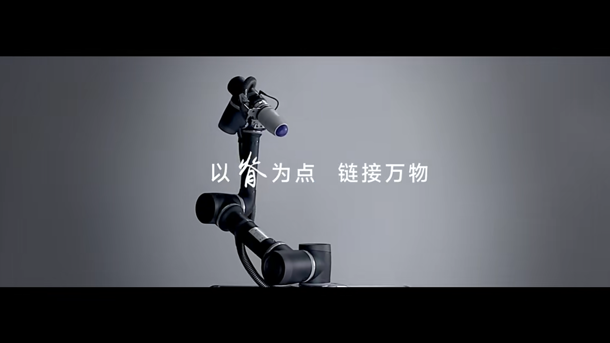
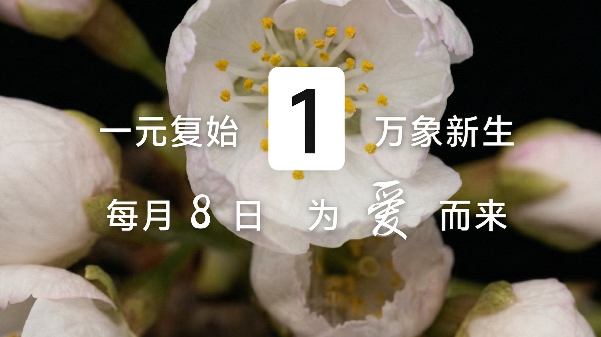
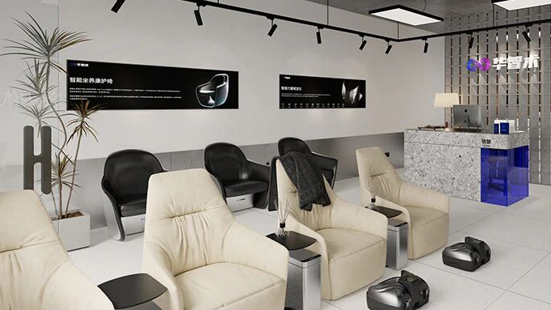
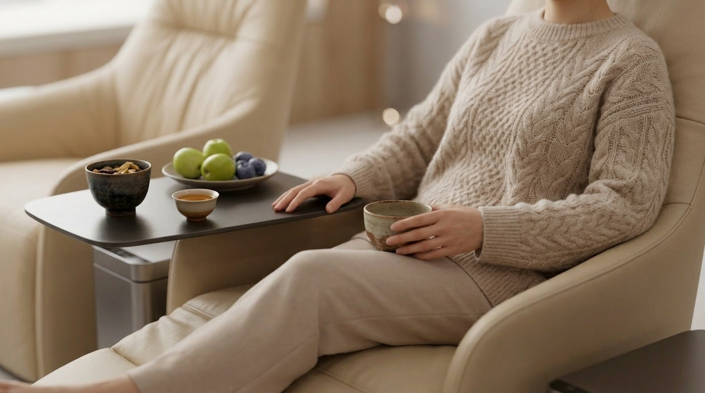
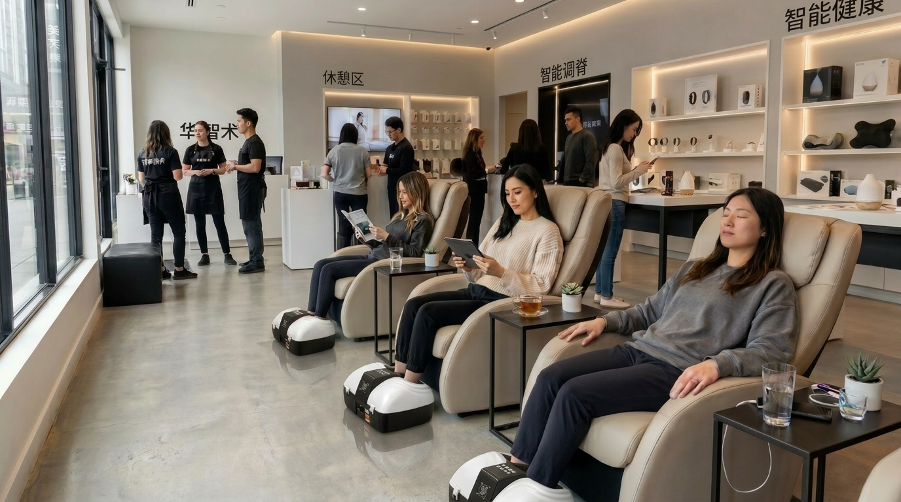

客群生命周期营销案例 - 爱就来8
以二十四节气驱动门店到店、会员教育与长期复购
项目名称
爱AI就来8会员营销体系
所属品牌
华智术
类型
门店用户运营 / 会员生命周期营销
Timeline
2023 - 2024 Seasonal

核心洞察
传统门店会员活动大多依赖临时促销、单次邀约或节点优惠，客户虽有兴趣，但缺乏稳定、周期性的到店理由，导致到店率、客户教育效率与后续复购频次都相对受限。相比一次性活动，门店更需要的是一套能够持续制造“为什么现在要来”的会员运营机制。
背景逻辑
华智术以“顺时养生”为核心理念，强调遵循节律、按节气调理脊柱与身体状态，并通过节气对应的脊柱节段、器官系统与身体问题建立更具东方认知的健康管理表达。基于这一品牌理念，项目尝试将“二十四节气”转化为门店全年可持续运营的会员营销主线，让原本专业性较强的调理逻辑，变成客户易理解、易参与、易形成习惯的到店机制。
活动目标
建立全年可持续复用的节气会员营销主线，形成稳定的门店活动节律
通过“节气 - 脊柱 - 器官 - 身体问题”的对应关系，降低用户理解门槛，提升健康教育效率
以固定活动日、免费体验与节气场景内容，提升会员到店率、活动参与度与主动复购意愿
将单次门店活动升级为可长期运转的会员生命周期营销系统，沉淀可复用的方法论模板
用户营销推进路径
以节气内容为主线，围绕门店教育、固定邀约、到店体验与复购承接，形成从内容建立到长期运营的完整闭环。
内容模型建立
以二十四节气作为全年会员营销主线，梳理每个节气对应的脊柱节段、器官系统、常见身体问题与调理重点，建立一套门店可持续复用的内容母体，让“顺时养生”从品牌理念转化为可执行的会员内容体系。
门店物料转化
将专业调理逻辑转化为用户易理解的门店表达，包括节气转盘、节气海报、知识话术、节气说明卡等，让“为什么此时要调理”“调理对应什么问题”变得更直观、更易传播。
活动节律建立
将每月 8-10 号设置为固定会员活动窗口，围绕当月节气开展主题专场，逐步培养会员对固定日期、固定主题、固定权益的认知，形成更稳定的到店习惯。
体验权益设计
在到店活动中叠加免费体验脊柱体验、节气水果、节气茶饮与互动讲解内容，让会员活动从单纯优惠促销，升级为“教育 + 体验 + 服务”的综合型门店场景。
会员分层承接
围绕新客、活跃会员、沉睡会员与重点客户，设计不同的邀约理由、参与权益与后续承接路径，让月度活动与长期会员管理真正连接起来。
复购闭环形成
通过节气主题内容、固定活动日期、门店互动装置与特色体验权益，推动用户从“被动邀约”转向“主动到店”，逐步形成会员教育、周期到店与长期复购的运营闭环。
用传统文化驱动用户粘性
不是做一次活动，而是建立一套让会员持续理解、持续到店、持续复购的门店营销系统。
01 节气内容化
以二十四节气作为全年内容主线，把抽象的养生理念转化为门店每月都有主题、每月都有理由的会员沟通内容，使用户自然形成“到这个时间就该来”的认知。

02 专业教育化
将“节气 - 脊柱 - 器官 - 症状 - 调理方案”的专业关系做成用户可视化讲解模型，通过门店转盘、知识讲解与现场互动，大幅降低认知门槛，增强信任感与参与意愿。

03 到店节律化
通过固定每月 8-10 号的会员活动，建立门店用户行为节律，把过去靠临时邀约驱动的到店行为，升级为具备周期性、习惯性的稳定到店机制。

04 体验场景化
将特殊调养体验、节气水果、节气茶饮、节气知识与门店空间氛围组合成一套完整体验，让活动不仅仅是邀约理由，更成为用户愿意停留、愿意理解、愿意复购的消费场景。

05 生命周期化
围绕新客教育、老客复购、沉睡唤醒与高价值客户维护，形成不同阶段的内容触达与权益设计，让活动不止服务单月到店，而是服务全年用户关系经营。
项目价值
以节气会员机制连接用户教育、到店复购与门店增长，推动门店经营从“活动邀约”向“长期运营”升级。
稳定到店
以每月固定节气活动窗口建立明确到店理由，降低临时邀约成本，提升门店客户回访与活动参与的稳定性。
认知建立
将“节气 - 脊柱 - 器官 - 身体问题”的专业逻辑转化为用户易理解的内容模型，缩短客户教育路径，提升服务理解效率。
用户粘性
通过节气调理、节气茶饮、水果体验与门店互动设计，增强客户对活动的期待感与参与感，推动用户形成周期性到店习惯。
复购转化
把原本依赖单次活动刺激的消费行为，升级为围绕节气主题持续发生的体验与服务复购，提高会员留存与后续转化可能。
私域沉淀
借助固定活动日与持续内容机制，将门店流量沉淀为可长期经营的会员与私域资产，提升门店后续运营的可触达性。

营销成果 CAMPAIGN RESULTS
- 1. 到店机制：以每月 8-10 号为固定会员活动窗口，建立门店稳定的月度到店节律，帮助客户从“被动邀约”逐步转向“主动关注”与“按时到店”。
- 2. 用户教育：围绕“小暑 - 脾胃 - 胸椎 T3-T4 调理”等节气逻辑，把原本复杂的专业调理知识转化为门店易讲、客户易懂、现场易记的用户教育内容，显著提升客户理解效率。
- 3. 体验粘性：通过节气转盘、免费特殊调养体验、节气水果与节气茶饮等设计，把会员活动从单纯促销转化为“教育 + 体验 + 服务”的综合场景，增强到店停留与复购意愿。
- 4. 经营价值：建立了“24节气内容体系 + 2年运营周期 + 每月固定活动日”的门店会员机制，为全门店运营、会员管理与长期业绩增长沉淀出可持续复用的经营模板。